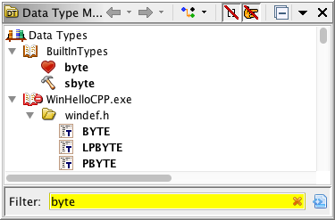
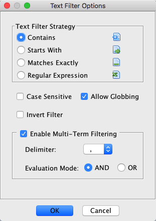
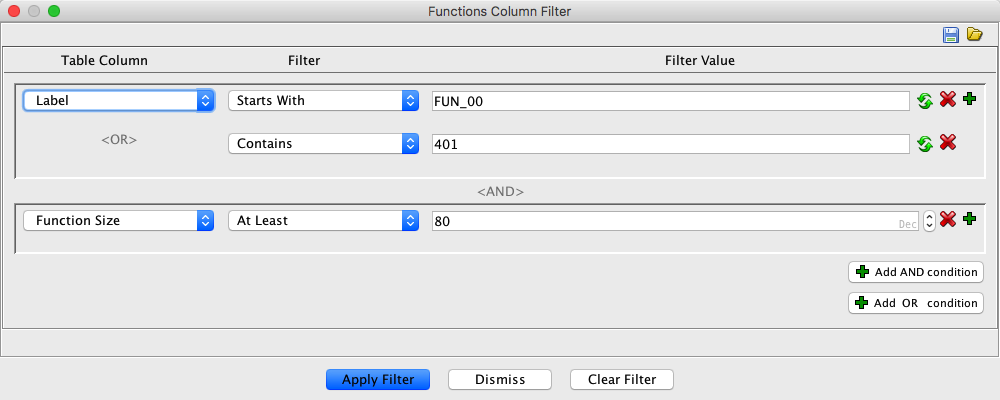
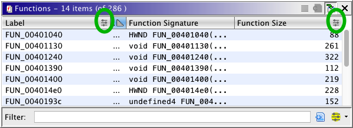

Most trees and tables in Ghidra support filtering and have a text filter located at the
bottom of the tree or table. Tables also support the concept of
Column Filters described below.
Below is an example from the Data Type Manager. The filter is
currently set to "Starts With", but you can select a different filter strategy.

The button to the right of the filter will bring up the Filter
Options Dialog. Its icon indicates the current Filter
Strategy.
Ghidra will remember the filter state for each tree or table. So, when you re-launch
Ghidra, all your trees and tables will have the filter state set as it was when you last
exited Ghidra.
 Some trees use more than the node's name for
filter purposes. So, it may appear that the filter is matching more than it should, when
actually it is also using some other related text for the match, such as a node
description.
Some trees use more than the node's name for
filter purposes. So, it may appear that the filter is matching more than it should, when
actually it is also using some other related text for the match, such as a node
description.
The Filter Options Dialog is used to control how the text in the filter text field is used
to perform filtering on the tree or table.

Filter Strategy
The filter strategy specifies how the text in the filter text field will be used to
match against the nodes in a tree or the rows in a table.
 |
Contains |
Tree nodes will match if its name contains the text in the filter text field. Table
rows will match if any of the columns contains the filter text.
 Multiple words in the text field
are treated as separate patterns and ALL patterns must match for the node or
row to be accepted. For example, if the text field contained "foo bar", then the
table will match if at least one column contains a "foo" and at least one column
contains a "bar". Multiple words in the text field
are treated as separate patterns and ALL patterns must match for the node or
row to be accepted. For example, if the text field contained "foo bar", then the
table will match if at least one column contains a "foo" and at least one column
contains a "bar".
|
 |
Starts With |
Tree nodes will match if its name starts with the text in the filter text field.
Table rows will match if any of the columns starts with the filter text. |
 |
Matches Exactly |
Tree nodes will match if its name exactly matches the text in the filter text
field.Table rows will match if any of the columns exactly match the filter text. |
 |
Regular Expression |
Tree nodes will match if the regular expression in the filter matches the name of
the node. Table rows will match if any of the columns matches the regular expression.
See regular
expression for help. Note that the regular expression will match if the pattern it
represents is contained in the tree node name or table column. If you want to
match the beginning or end (i.e starts with or ends with), you must include the special
"starts with" (^) or "ends with" ($) regular expression character syntax. For example,
the regular expression "bob" will match "bobby", "hey bobby", and "bob", but the
regular expression "^bob" will match "bobby" and "bob", and "^bob$" will only match
"bob". |
Case Sensitive
Selecting the case sensitive checkbox will cause the filter to be case sensitive when
matching the text in the filter text field against the nodes or table rows. NOTE: This
option has no effect when the "Regular Expression" strategy is selected.
Allow Globbing
Selecting the allow globbing checkbox will cause the filter to interpret the globbing
chars "*" and "?" as wildcards. The "*" char will match any number of characters while the
"?" character will match a single character. For example "ab*g" will match "abxg" and
"abxxg" and so on. The text "ab?g" will match "abxg" but not "abxxg". NOTE: This option has
no effect when the "Regular Expression" strategy is selected.
Invert Filter
Selecting the inverted checkbox will cause the filter to only include those tree nodes
or table rows that DO NOT meet the filter text criteria. In other words, "contains"
becomes "does not contain". This negation happens after all other filtering tests have been
performed, including multi-term matching.
Enable Multi-Term Filtering
Often it is useful to filter the contents of a tree or table according to multiple
terms. The options here specify how a more complex filter expression is interpreted and
evaluated. If the text is split, the Filter Strategy and associated options -- case
sensitivity, globbing, and inversion -- are applied to each term.
When 'Regular Expression' is selected as the
filter strategy, these options are disabled. Regular expressions are flexible enough to
match multiple terms and may contain many of the characters otherwise used for convenient
text splitting.
Delimiter
How terms are split apart is governed by two significant factors -- user preference, and
the data being processed. If the data in the tree or table contains spaces and commas,
these could make poor choices for separating filter terms -- the semicolon or pipe would
likely be more appropriate choices.
Ghidra defaults to a comma separator for multiple terms; you may select a different
delimiter character from the following:
[space] ~ ` ! @ # $ % ^ & * - _ + = | : ; , .
Whitespace preceding and trailing the delimiter is automatically removed.
In situations were the delimiter appears in your filter term, wrap the term in
double-quotes to protect the expression. For example, 'bob | "cat | dog" |
jane' will be split (assume the '|' delimiter) into three terms --
bob, cat | dog, and jane. (Note that both the
delimiter character and the spaces in the 'cat | dog' term persists; the
entire quoted string was parsed as a string literal.) Typically, this situation can be
avoided by selecting a more appropriate delimiter that doesn't collide with values in the
tree or table row.
Evaluation Mode
When filtering multiple terms, it may be useful to specify a higher-level acceptance
model. The Filter Evaluation Mode specification allows a user to specify how the multiple
filters are combined into a more robust expression. Most frequently, you'll likely be
looking for data that matches "X or Y" -- select 'OR' in this case, and enter
values X and Y according to the current splitting strategy ("X Y", "X;Y", "X|Y", etc.).
Again, the evaluation for whether a piece of data matches X or Y is determined by the Filter Strategy.
However, if you're looking for data that matches all the terms of your filter, select the
'AND' evaluation mode. Each filter for values X and Y must accept the data for
overall acceptance by the filter.
Using delimiters that otherwise have a
logical definition -- '+', or '|', for example -- have
no semantic value in this application; they are simply tokens for input string
processing.
Multi-Term Filter Examples
Consider the view where the files in the current project are presented in your choice of
a tree or a table. Suppose there are minimally these two files:
- 'foo.dll', compiled by GCC on January 21st, and 'foo_new.dll',
- compiled by Visual Studio on January 21st.
The filter
dll, january, gcc (split on comma using the 'OR' evaluation
mode),
will select both files. (In actuality, it will accept any file with 'dll',
'january', or 'gcc' in it's set of filter-aware data.)
Switching the evaluation mode to 'AND' will select only 'foo.dll', as it is
the only record that satisfies all three conditions (similar to the 'OR'
discussion, only files satisfying all three properties will be selected).
Most filterable tables in Ghidra support advanced filtering based on column values. This
allows for complex filtering where you can logically combine column specific clauses.
 Some columns in tables are not filterable via the filter text field below the table.
For example, many numeric columns are ignored by the text filter because they can be
slow to calculate and they are better filtered by using a range filter, as is available
using column filters.
Some columns in tables are not filterable via the filter text field below the table.
For example, many numeric columns are ignored by the text filter because they can be
slow to calculate and they are better filtered by using a range filter, as is available
using column filters.

The  button in lower right corner will bring up
the Column Filter Dialog.
button in lower right corner will bring up
the Column Filter Dialog.

This dialog describes a filter that will
narrow the list of functions to those whose name starts with "FUN_00" or contains
"401" and the Function Size is at least 80.
Filters Panel
The main panel of the dialog consists of a series of column filters (each in its own
row). Each column filter consists of a series of constraints for that column. Within a
column, only one of the constraints for that column must pass (i.e., they are or'd
together), but each column filter must pass (i.e. they are and'ed together) for the table
row to pass the filter.
The sections of each filter row are as follows:
- Table Column - Combo box for choosing the column to filter (they are listed in
the order of the table). For additional OR conditions on the same column, this column
will just have a "<OR>" label.
- Filter - Combo box for choosing the constraint condition. For string types,
this would include such items as "starts with", "ends with" and "contains".
- Filter Value - Editor component for entering the condition value to compare
against. This component will change depending on the column type.
Actions
Panel Actions:
- Add a new AND column filter - The "
 Add AND
condition" button in the bottom right will add a new column filter that will be "ANDed"
to any previous conditions. It will default to the first column with a default constraint
applicable for that columns type.
Add AND
condition" button in the bottom right will add a new column filter that will be "ANDed"
to any previous conditions. It will default to the first column with a default constraint
applicable for that columns type.
- Add a new OR column filter - The " Add OR
condition" button in the bottom right will add a new column filter that will be "ORed"
with any previous conditions. It will default to the first column with a default
constraint applicable for that columns type. Note that AND conditions have higher
precedence than OR conditions.
- Add an additional constraint to a column filter - The button all the way on the right of the column filter will add an
additional constraint condition.
- Delete a column condition - The
 button at the end of a condition will delete that condition. If that condition was the
last condition in a column filter, the column filter will be deleted.
button at the end of a condition will delete that condition. If that condition was the
last condition in a column filter, the column filter will be deleted.
Toolbar actions
- Save Filter
 - Saves the current dialog
configuration to the tool. A dialog will appear that will allow you to name the
filter
- Saves the current dialog
configuration to the tool. A dialog will appear that will allow you to name the
filter
- Load Filter
 - Pops up a dialog with
a list of saved filters. Selecting one will load that filter into the dialog.
- Pops up a dialog with
a list of saved filters. Selecting one will load that filter into the dialog.
Dialog actions
- Apply - Applies the dialog's filter to the table. Only enabled if all the
conditions in the dialog are valid.
- Dismiss - Closes the filter dialog. Any currently applied filter remains in
effect.
- Clear Filter - Removes any currently applied column filter from the table and
resets the dialog to its initial state.
Constraint Types
The column constraints (conditions) for a given column depend on the type of the data in
that column. If the type of the column data is one that has at least one constraint
defined, then that column is filterable; otherwise it will not appear in the column combo
box. Some of the supported column types and their associated constraints are:
String
- Starts With - Matches if the column value starts with a given string.
- Ends With - Matches if the column value ends with a given string.
- Contains - Matches if the column value contains a given string.
- Matches RegEx - Matches if the column value matches a given regular
expression.
Byte, Short, Integer, Long, Float, Double
- At Most - Matches if the column value is less than or equal to a given
value.
- At Least - Matches if the column value is greater than or equal to a given
value.
- In Range - Matches if the column value is in a given range.
- Not In Range - Matches if the column value is not in a given range.
Date
- On or After - Matches if the column value date is newer than a given
date.
- On or Before - Matches if the column value date is older than a given
date.
- Between Dates - Matches if the column value date is in the given date
range.
- Not Between Dates - Matches if the column value date is not in the given date
range.
Boolean
- Matches - Matches if the column boolean value is the same as the given boolean
value.
Enum (any enum type)
- Is One Of - Matches if the column enum value is one of a given set of enum
values.
Filter Results
After applying the the filter show above, the table would appear as follows:

Notice that the headers for both the Label and Function Size columns have
the icon. This indicates that there is an applied
column based filter and those columns are the ones whose values are affected by the
filter.